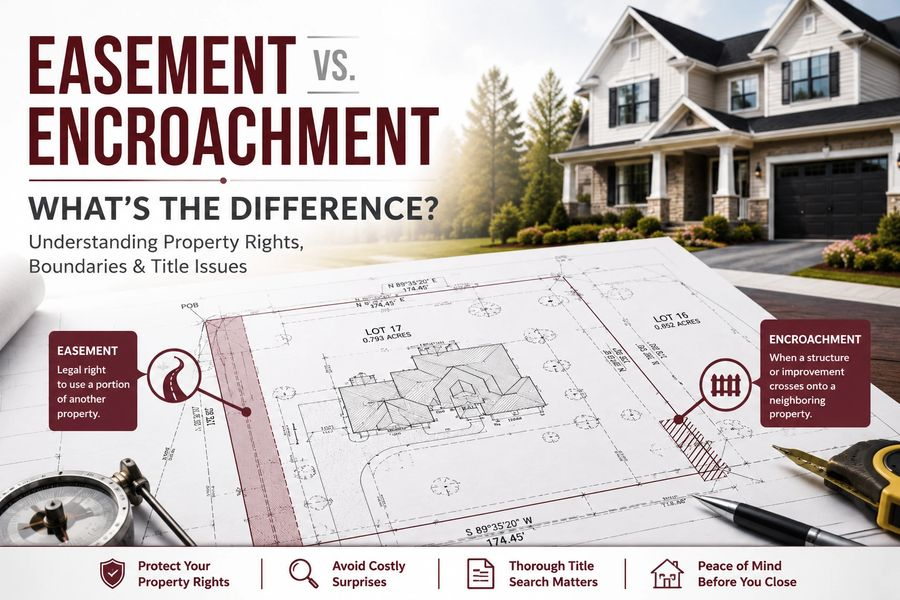

Easement vs. Encroachment: What NJ Property Owners Need To Know
If you're buying, selling, or refinancing a property in Matawan, NJ, understanding property boundaries is an important part of protecting your investment.
Read on rallypointtitle.com →